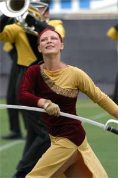

2004 Southwind Program
The 2004 Sotuhwind program is "A Journey Through the Sands". There are four parts to the program: Sandstorm, Mirage (& Dance), Oasis, and Pyramids.
Southwind Drum and Bugle Corps was founded in Montgomery, Alabama in 1980. After much success as a Division II corps, including winning the 1991 Drum Corps International Class A Championship and 1992 Drum Corps International Division II Championship, the corps moved into Division I for the 1993 season. The corps continued competing in division I through the 1997 season, but went inactive in 1998.
The design and teaching staff includes Steve Vento and Mike Loeffelholz, program coordinators; Steve Vento, Joe Wesche, David Fuller, Loni Thernes, G. Jon Thomann, Brett Owens, Jeremy Basso, and Chris Parks for brass; T.R. Fitz-Gibbon, Jim Yakas, Eric Willie, Paul Weber, Doug Bush, Pat Fitz-Gibbon, Seth Dahm, Jeremy Jones, Patricia Islas, and Staci Stokes for percussion; Mark Palise, Dann Petersen, Erine Anderson, Michelle McKee, Kevin Kauzlarich, Jeff Gorring, Paul Keck, Chris Morrissette, and Mike Ivan Burke for visual; and Barry Artis, Mandy Bumgarner, Alacia Jordan, Chad Truitt, Jill Flores, Dana Thomas, Rob Arnold, and Kimmy Keck for the color guard. The management team includes Kimmy Keck, Alison Stephenson, and Brandon Abdon.
The corps is led on the field by Drum Major Lauren McCawley. Their director is Mike Loeffelholz, and the Executive Director of the Madison Drum & Bugle Corps Association is Andy Davis.
On The Web